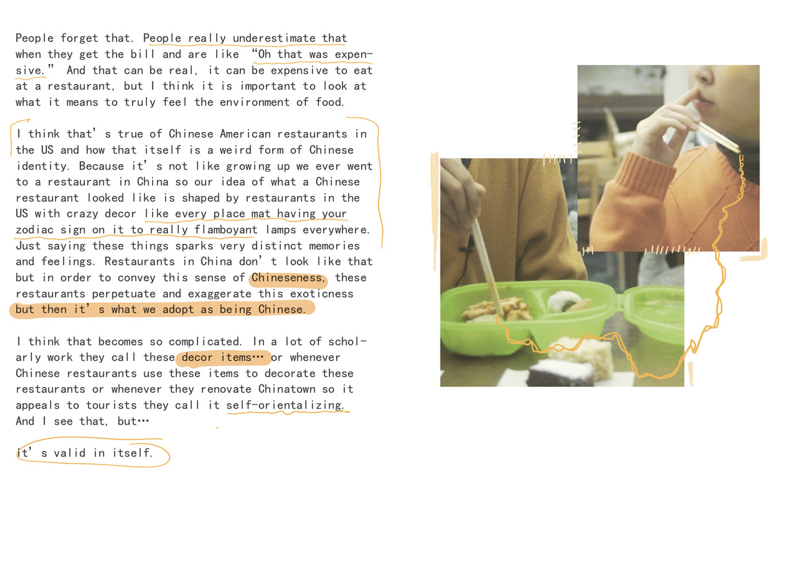

semi-homemade (2018)
a print publication on food and home-making by cj park, andy li and lynn tachihara
sold at MOMA PS1, Boston Zine Fair
issue i
explores “food porn” and the contours of consumption.

issue ii
investigates food as a pathway to home, illustrating dialogues with 2ndgen chinese americans from the brown&risd community
